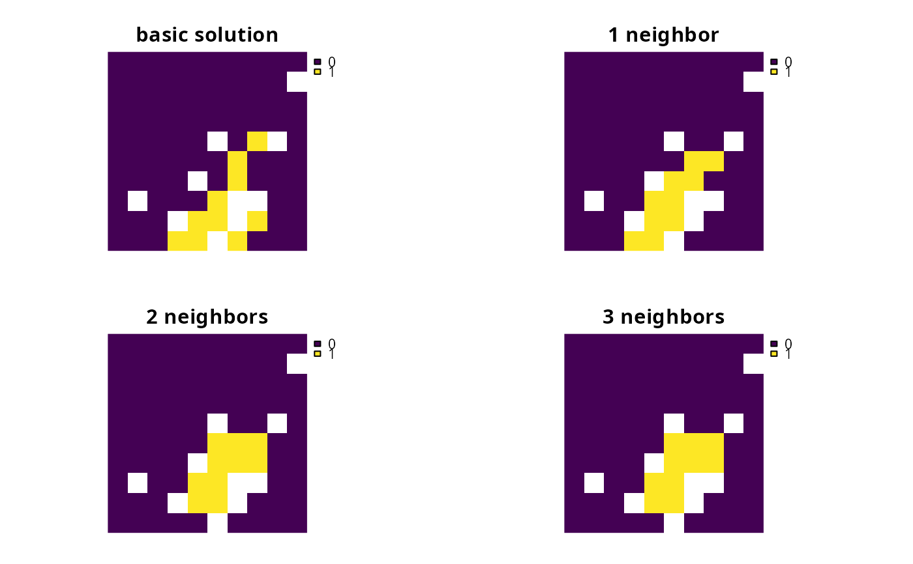

Add constraints to a conservation planning problem to ensure
that all selected planning units in the solution have at least a certain
number of neighbors that are also selected in the solution.
# S4 method for ConservationProblem,ANY,ANY,ANY add_neighbor_constraints(x, k, zones, data) # S4 method for ConservationProblem,ANY,ANY,data.frame add_neighbor_constraints(x, k, zones, data) # S4 method for ConservationProblem,ANY,ANY,matrix add_neighbor_constraints(x, k, zones, data) # S4 method for ConservationProblem,ANY,ANY,array add_neighbor_constraints(x, k, zones, data)
Arguments
| x |
|
|---|---|
| k |
|
| zones |
|
| data |
|
Value
ConservationProblem-class object with the constraint
added to it.
Details
This function uses neighborhood data identify solutions that surround planning units with a minimum number of neighbors. It was inspired by one of the mathematical formulations detailed in Billionnet (2013).
The argument to data can be specified in several ways:
NULLneighborhood data should be calculated automatically using the
connected_matrixfunction. This is the default argument. Note that the neighborhood data must be manually defined using one of the other formats below when the planning unit data in the argument toxis not spatially referenced (e.g. indata.frameornumericformat).matrix,Matrixwhere rows and columns represent different planning units and the value of each cell indicates if the two planning units are neighbors or not. Cell values should be binary
numericvalues (i.e. one or zero). Cells that occur along the matrix diagonal have no effect on the solution at all because each planning unit cannot be a neighbor with itself.data.framecontaining the fields (columns)
"id1","id2", and"boundary". Here, each row denotes the connectivity between two planning units following the Marxan format. The fieldboundaryshould contain binarynumericvalues that indicate if the two planning units specified in the fields"id1"and"id2"are neighbors or not. This data can be used to describe symmetric or asymmetric relationships between planning units. By default, input data is assumed to be symmetric unless asymmetric data is also included (e.g. if data is present for planning units 2 and 3, then the same amount of connectivity is expected for planning units 3 and 2, unless connectivity data is also provided for planning units 3 and 2). If the argument toxcontains multiple zones, then the columns"zone1"and"zone2"can optionally be provided to manually specify if the neighborhood data pertain to specific zones. The fields"zone1"and"zone2"should contain thecharacternames of the zones. If the columns"zone1"and"zone2"are present, then the argument tozonesmust beNULL.arraycontaining four-dimensions where binary
numericvalues indicate if planning unit should be treated as being neighbors with every other planning unit when they are allocated to every combination of management zone. The first two dimensions (i.e. rows and columns) correspond to the planning units, and second two dimensions correspond to the management zones. For example, if the argument todatahad a value of 1 at the indexdata[1, 2, 3, 4]this would indicate that planning unit 1 and planning unit 2 should be treated as neighbors when they are allocated to zones 3 and 4 respectively.
References
Billionnet A (2013) Mathematical optimization ideas for biodiversity conservation. European Journal of Operational Research, 231: 514--534.
See also
Examples
# load data data(sim_pu_raster, sim_features, sim_pu_zones_stack, sim_features_zones) # create minimal problem p1 <- problem(sim_pu_raster, sim_features) %>% add_min_set_objective() %>% add_relative_targets(0.1) # create problem with constraints that require 1 neighbor # and neighbors are defined using a rook-style neighborhood p2 <- p1 %>% add_neighbor_constraints(1) # create problem with constraints that require 2 neighbor # and neighbors are defined using a rook-style neighborhood p3 <- p1 %>% add_neighbor_constraints(2) # create problem with constraints that require 3 neighbor # and neighbors are defined using a queen-style neighborhood p4 <- p1 %>% add_neighbor_constraints(3, data = connected_matrix(sim_pu_raster, directions = 8))# solve problems s1 <- stack(list(solve(p1), solve(p2), solve(p3), solve(p4)))#> Optimize a model with 5 rows, 90 columns and 450 nonzeros #> Variable types: 0 continuous, 90 integer (90 binary) #> Coefficient statistics: #> Matrix range [2e-01, 9e-01] #> Objective range [2e+02, 2e+02] #> Bounds range [1e+00, 1e+00] #> RHS range [3e+00, 8e+00] #> Found heuristic solution: objective 2337.9617505 #> Presolve time: 0.00s #> Presolved: 5 rows, 90 columns, 450 nonzeros #> Variable types: 0 continuous, 90 integer (90 binary) #> Presolved: 5 rows, 90 columns, 450 nonzeros #> #> #> Root relaxation: objective 1.924252e+03, 13 iterations, 0.00 seconds #> #> Nodes | Current Node | Objective Bounds | Work #> Expl Unexpl | Obj Depth IntInf | Incumbent BestBd Gap | It/Node Time #> #> 0 0 1924.25198 0 4 2337.96175 1924.25198 17.7% - 0s #> H 0 0 1979.9609382 1924.25198 2.81% - 0s #> #> Explored 1 nodes (13 simplex iterations) in 0.00 seconds #> Thread count was 1 (of 4 available processors) #> #> Solution count 2: 1979.96 2337.96 #> #> Optimal solution found (tolerance 1.00e-01) #> Best objective 1.979960938178e+03, best bound 1.924251977336e+03, gap 2.8136% #> Optimize a model with 95 rows, 90 columns and 828 nonzeros #> Variable types: 0 continuous, 90 integer (90 binary) #> Coefficient statistics: #> Matrix range [2e-01, 1e+00] #> Objective range [2e+02, 2e+02] #> Bounds range [1e+00, 1e+00] #> RHS range [3e+00, 8e+00] #> Found heuristic solution: objective 2183.0924422 #> Presolve time: 0.00s #> Presolved: 95 rows, 90 columns, 828 nonzeros #> Variable types: 0 continuous, 90 integer (90 binary) #> Presolved: 95 rows, 90 columns, 828 nonzeros #> #> #> Root relaxation: objective 1.924823e+03, 14 iterations, 0.00 seconds #> #> Nodes | Current Node | Objective Bounds | Work #> Expl Unexpl | Obj Depth IntInf | Incumbent BestBd Gap | It/Node Time #> #> 0 0 1924.82315 0 5 2183.09244 1924.82315 11.8% - 0s #> H 0 0 1982.4157068 1924.82315 2.91% - 0s #> #> Explored 1 nodes (14 simplex iterations) in 0.00 seconds #> Thread count was 1 (of 4 available processors) #> #> Solution count 2: 1982.42 2183.09 #> #> Optimal solution found (tolerance 1.00e-01) #> Best objective 1.982415706799e+03, best bound 1.924823151914e+03, gap 2.9052% #> Optimize a model with 95 rows, 90 columns and 828 nonzeros #> Variable types: 0 continuous, 90 integer (90 binary) #> Coefficient statistics: #> Matrix range [2e-01, 2e+00] #> Objective range [2e+02, 2e+02] #> Bounds range [1e+00, 1e+00] #> RHS range [3e+00, 8e+00] #> Found heuristic solution: objective 3394.7345864 #> Presolve removed 2 rows and 4 columns #> Presolve time: 0.00s #> Presolved: 93 rows, 86 columns, 798 nonzeros #> Variable types: 0 continuous, 86 integer (86 binary) #> Presolved: 93 rows, 86 columns, 798 nonzeros #> #> #> Root relaxation: objective 1.939606e+03, 43 iterations, 0.00 seconds #> #> Nodes | Current Node | Objective Bounds | Work #> Expl Unexpl | Obj Depth IntInf | Incumbent BestBd Gap | It/Node Time #> #> 0 0 1939.60631 0 18 3394.73459 1939.60631 42.9% - 0s #> H 0 0 2450.3175793 1939.60631 20.8% - 0s #> H 0 0 2368.0045590 1939.60631 18.1% - 0s #> 0 0 1947.32573 0 22 2368.00456 1947.32573 17.8% - 0s #> H 0 0 2282.2910206 1947.32573 14.7% - 0s #> H 0 0 2253.2782866 1947.32573 13.6% - 0s #> 0 0 1995.12923 0 14 2253.27829 1995.12923 11.5% - 0s #> 0 0 1995.82942 0 15 2253.27829 1995.82942 11.4% - 0s #> 0 0 1999.36816 0 11 2253.27829 1999.36816 11.3% - 0s #> 0 0 1999.47043 0 11 2253.27829 1999.47043 11.3% - 0s #> 0 0 1999.98099 0 12 2253.27829 1999.98099 11.2% - 0s #> 0 0 2000.75850 0 26 2253.27829 2000.75850 11.2% - 0s #> 0 0 2001.03906 0 23 2253.27829 2001.03906 11.2% - 0s #> 0 0 2001.15429 0 27 2253.27829 2001.15429 11.2% - 0s #> 0 2 2001.29633 0 27 2253.27829 2001.29633 11.2% - 0s #> H 22 17 2023.4740746 2003.08458 1.01% 8.6 0s #> #> Cutting planes: #> Gomory: 4 #> Cover: 11 #> MIR: 6 #> Zero half: 1 #> #> Explored 22 nodes (321 simplex iterations) in 0.07 seconds #> Thread count was 1 (of 4 available processors) #> #> Solution count 6: 2023.47 2253.28 2282.29 ... 3394.73 #> #> Optimal solution found (tolerance 1.00e-01) #> Best objective 2.023474074559e+03, best bound 2.003084584017e+03, gap 1.0076% #> Optimize a model with 95 rows, 90 columns and 1084 nonzeros #> Variable types: 0 continuous, 90 integer (90 binary) #> Coefficient statistics: #> Matrix range [2e-01, 3e+00] #> Objective range [2e+02, 2e+02] #> Bounds range [1e+00, 1e+00] #> RHS range [3e+00, 8e+00] #> Found heuristic solution: objective 2746.9251892 #> Presolve removed 1 rows and 1 columns #> Presolve time: 0.00s #> Presolved: 94 rows, 89 columns, 1074 nonzeros #> Variable types: 0 continuous, 89 integer (89 binary) #> Presolved: 94 rows, 89 columns, 1074 nonzeros #> #> #> Root relaxation: objective 1.933815e+03, 31 iterations, 0.00 seconds #> #> Nodes | Current Node | Objective Bounds | Work #> Expl Unexpl | Obj Depth IntInf | Incumbent BestBd Gap | It/Node Time #> #> 0 0 1933.81530 0 15 2746.92519 1933.81530 29.6% - 0s #> H 0 0 2431.2089197 1933.81530 20.5% - 0s #> 0 0 1989.14533 0 13 2431.20892 1989.14533 18.2% - 0s #> H 0 0 2431.1303256 1989.14533 18.2% - 0s #> H 0 0 2412.3713574 1989.14533 17.5% - 0s #> 0 0 1989.26829 0 15 2412.37136 1989.26829 17.5% - 0s #> 0 0 1993.15633 0 20 2412.37136 1993.15633 17.4% - 0s #> H 0 0 2410.1031150 1993.15633 17.3% - 0s #> 0 0 1993.37579 0 19 2410.10311 1993.37579 17.3% - 0s #> 0 0 1994.01254 0 19 2410.10311 1994.01254 17.3% - 0s #> 0 0 1994.55619 0 23 2410.10311 1994.55619 17.2% - 0s #> H 0 0 2374.0560071 1994.55619 16.0% - 0s #> 0 0 1994.59191 0 24 2374.05601 1994.59191 16.0% - 0s #> 0 0 1994.74679 0 22 2374.05601 1994.74679 16.0% - 0s #> 0 2 1995.09827 0 22 2374.05601 1995.09827 16.0% - 0s #> H 312 161 2222.0732342 2011.78830 9.46% 7.9 0s #> #> Cutting planes: #> Gomory: 3 #> Cover: 47 #> MIR: 10 #> Mod-K: 2 #> #> Explored 312 nodes (2573 simplex iterations) in 0.12 seconds #> Thread count was 1 (of 4 available processors) #> #> Solution count 7: 2222.07 2374.06 2410.1 ... 2746.93 #> #> Optimal solution found (tolerance 1.00e-01) #> Best objective 2.222073234223e+03, best bound 2.011788301932e+03, gap 9.4635%# plot solutions plot(s1, box = FALSE, axes = FALSE, main = c("basic solution", "1 neighbor", "2 neighbors", "3 neighbors"))# create minimal problem with multiple zones p5 <- problem(sim_pu_zones_stack, sim_features_zones) %>% add_min_set_objective() %>% add_relative_targets(matrix(0.1, ncol = 3, nrow = 5)) # create problem where selected planning units require at least 2 neighbors # for each zone and planning units are only considered neighbors if they # are allocated to the same zone z6 <- diag(3) print(z6)#> [,1] [,2] [,3] #> [1,] 1 0 0 #> [2,] 0 1 0 #> [3,] 0 0 1p6 <- p5 %>% add_neighbor_constraints(rep(2, 3), z6) # create problem where the planning units in zone 1 don't explicitly require # any neighbors, planning units in zone 2 require at least 1 neighbors, and # planning units in zone 3 require at least 2 neighbors. As before, planning # units are still only considered neighbors if they are allocated to the # same zone p7 <- p5 %>% add_neighbor_constraints(c(0, 1, 2), z6) # create problem given the same constraints as outlined above, except # that when determining which selected planning units are neighbors, # planning units that are allocated to zone 1 and zone 2 can also treated # as being neighbors with each other z8 <- diag(3) z8[1, 2] <- 1 z8[2, 1] <- 1 print(z8)#> [,1] [,2] [,3] #> [1,] 1 1 0 #> [2,] 1 1 0 #> [3,] 0 0 1p8 <- p5 %>% add_neighbor_constraints(c(0, 1, 2), z8)# solve problems s2 <- list(p5, p6, p7, p8) s2 <- lapply(s2, solve)#> Optimize a model with 105 rows, 270 columns and 1620 nonzeros #> Variable types: 0 continuous, 270 integer (270 binary) #> Coefficient statistics: #> Matrix range [2e-01, 1e+00] #> Objective range [2e+02, 2e+02] #> Bounds range [1e+00, 1e+00] #> RHS range [1e+00, 8e+00] #> Found heuristic solution: objective 6831.3431381 #> Presolve time: 0.00s #> Presolved: 105 rows, 270 columns, 1620 nonzeros #> Variable types: 0 continuous, 270 integer (270 binary) #> Presolved: 105 rows, 270 columns, 1620 nonzeros #> #> #> Root relaxation: objective 5.950934e+03, 79 iterations, 0.00 seconds #> #> Nodes | Current Node | Objective Bounds | Work #> Expl Unexpl | Obj Depth IntInf | Incumbent BestBd Gap | It/Node Time #> #> 0 0 5950.93434 0 11 6831.34314 5950.93434 12.9% - 0s #> H 0 0 6078.1123440 5950.93434 2.09% - 0s #> #> Explored 1 nodes (79 simplex iterations) in 0.01 seconds #> Thread count was 1 (of 4 available processors) #> #> Solution count 2: 6078.11 6831.34 #> #> Optimal solution found (tolerance 1.00e-01) #> Best objective 6.078112344026e+03, best bound 5.950934338290e+03, gap 2.0924% #> Optimize a model with 375 rows, 270 columns and 2760 nonzeros #> Variable types: 0 continuous, 270 integer (270 binary) #> Coefficient statistics: #> Matrix range [2e-01, 2e+00] #> Objective range [2e+02, 2e+02] #> Bounds range [1e+00, 1e+00] #> RHS range [1e+00, 8e+00] #> Found heuristic solution: objective 8537.2927605 #> Presolve removed 6 rows and 9 columns #> Presolve time: 0.01s #> Presolved: 369 rows, 261 columns, 2685 nonzeros #> Variable types: 0 continuous, 261 integer (261 binary) #> Presolved: 369 rows, 261 columns, 2685 nonzeros #> #> #> Root relaxation: objective 5.971151e+03, 267 iterations, 0.01 seconds #> #> Nodes | Current Node | Objective Bounds | Work #> Expl Unexpl | Obj Depth IntInf | Incumbent BestBd Gap | It/Node Time #> #> 0 0 5971.15051 0 46 8537.29276 5971.15051 30.1% - 0s #> H 0 0 6710.6438036 5971.15051 11.0% - 0s #> H 0 0 6707.2996384 5971.15051 11.0% - 0s #> 0 0 5979.93204 0 46 6707.29964 5979.93204 10.8% - 0s #> H 0 0 6700.4815824 5979.93204 10.8% - 0s #> 0 0 6032.77799 0 48 6700.48158 6032.77799 10.0% - 0s #> 0 0 6035.00381 0 55 6700.48158 6035.00381 9.93% - 0s #> 0 0 6035.78922 0 56 6700.48158 6035.78922 9.92% - 0s #> 0 0 6036.05774 0 49 6700.48158 6036.05774 9.92% - 0s #> #> Cutting planes: #> Gomory: 7 #> Cover: 25 #> Clique: 3 #> MIR: 9 #> StrongCG: 1 #> Zero half: 1 #> #> Explored 1 nodes (508 simplex iterations) in 0.05 seconds #> Thread count was 1 (of 4 available processors) #> #> Solution count 4: 6700.48 6707.3 6710.64 8537.29 #> #> Optimal solution found (tolerance 1.00e-01) #> Best objective 6.700481582399e+03, best bound 6.036057740789e+03, gap 9.9161% #> Warning for adding variables: zero or small (< 1e-13) coefficients, ignored #> Optimize a model with 375 rows, 270 columns and 2670 nonzeros #> Variable types: 0 continuous, 270 integer (270 binary) #> Coefficient statistics: #> Matrix range [2e-01, 2e+00] #> Objective range [2e+02, 2e+02] #> Bounds range [1e+00, 1e+00] #> RHS range [1e+00, 8e+00] #> Found heuristic solution: objective 7080.5111326 #> Presolve removed 91 rows and 3 columns #> Presolve time: 0.01s #> Presolved: 284 rows, 267 columns, 2357 nonzeros #> Variable types: 0 continuous, 267 integer (267 binary) #> Presolved: 284 rows, 267 columns, 2357 nonzeros #> #> #> Root relaxation: objective 5.956651e+03, 156 iterations, 0.00 seconds #> #> Nodes | Current Node | Objective Bounds | Work #> Expl Unexpl | Obj Depth IntInf | Incumbent BestBd Gap | It/Node Time #> #> 0 0 5956.65139 0 30 7080.51113 5956.65139 15.9% - 0s #> H 0 0 6543.3159914 5956.65139 8.97% - 0s #> #> Explored 1 nodes (156 simplex iterations) in 0.01 seconds #> Thread count was 1 (of 4 available processors) #> #> Solution count 2: 6543.32 7080.51 #> #> Optimal solution found (tolerance 1.00e-01) #> Best objective 6.543315991396e+03, best bound 5.956651389956e+03, gap 8.9659% #> Warning for adding variables: zero or small (< 1e-13) coefficients, ignored #> Optimize a model with 375 rows, 270 columns and 3250 nonzeros #> Variable types: 0 continuous, 270 integer (270 binary) #> Coefficient statistics: #> Matrix range [2e-01, 2e+00] #> Objective range [2e+02, 2e+02] #> Bounds range [1e+00, 1e+00] #> RHS range [1e+00, 8e+00] #> Found heuristic solution: objective 7515.3300140 #> Presolve removed 91 rows and 3 columns #> Presolve time: 0.01s #> Presolved: 284 rows, 267 columns, 2647 nonzeros #> Variable types: 0 continuous, 267 integer (267 binary) #> Presolved: 284 rows, 267 columns, 2647 nonzeros #> #> #> Root relaxation: objective 5.956231e+03, 165 iterations, 0.01 seconds #> #> Nodes | Current Node | Objective Bounds | Work #> Expl Unexpl | Obj Depth IntInf | Incumbent BestBd Gap | It/Node Time #> #> 0 0 5956.23080 0 26 7515.33001 5956.23080 20.7% - 0s #> H 0 0 6509.2489699 5956.23080 8.50% - 0s #> #> Explored 1 nodes (165 simplex iterations) in 0.02 seconds #> Thread count was 1 (of 4 available processors) #> #> Solution count 2: 6509.25 7515.33 #> #> Optimal solution found (tolerance 1.00e-01) #> Best objective 6.509248969868e+03, best bound 5.956230798547e+03, gap 8.4959%s2 <- lapply(s2, category_layer) s2 <- stack(s2) names(s2) <- c("basic problem", "p6", "p7", "p8") # plot solutions plot(s2, main = names(s2), box = FALSE, axes = FALSE)